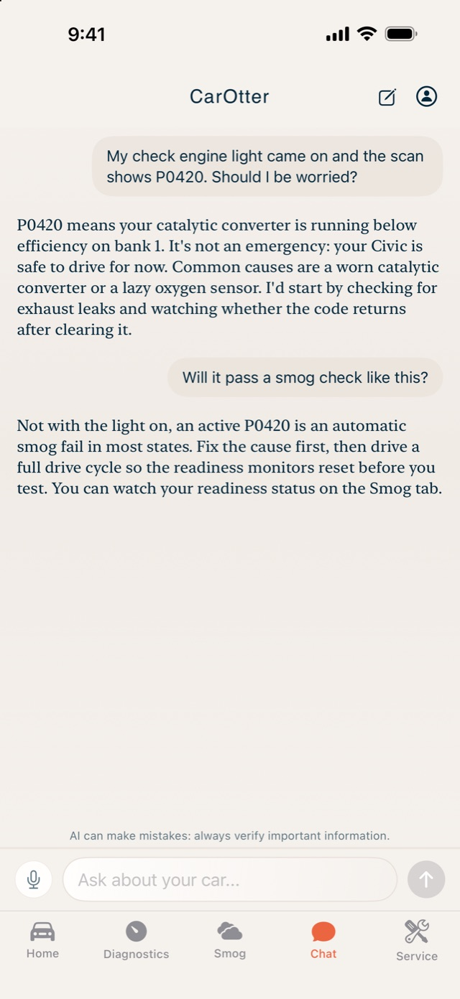
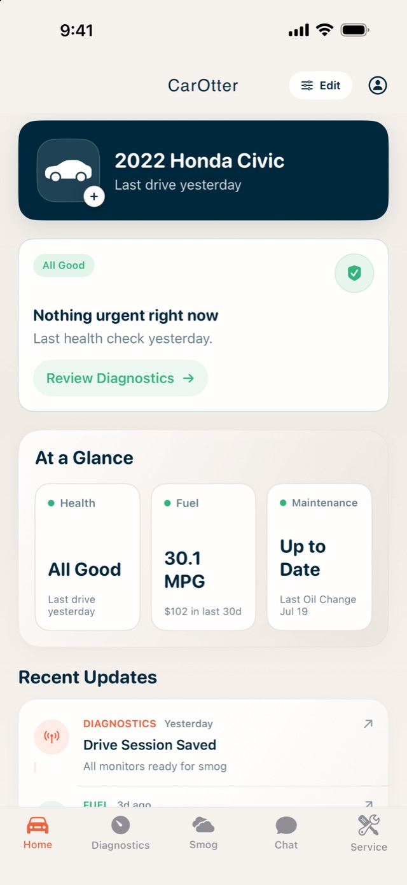
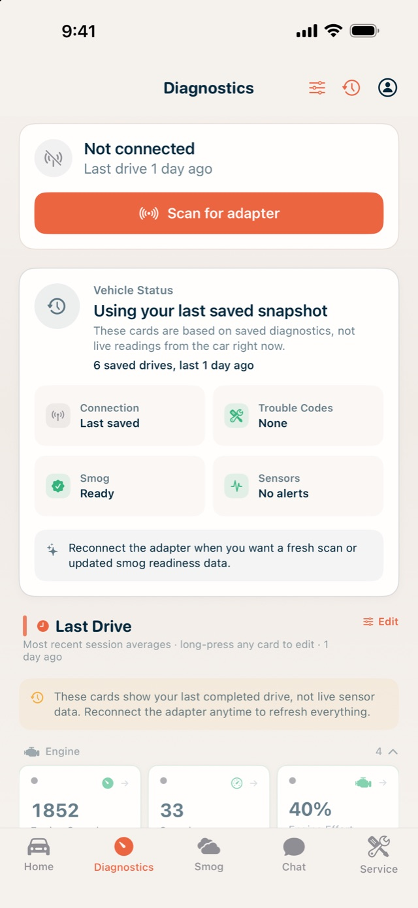
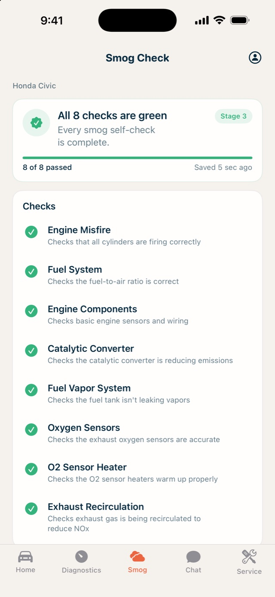
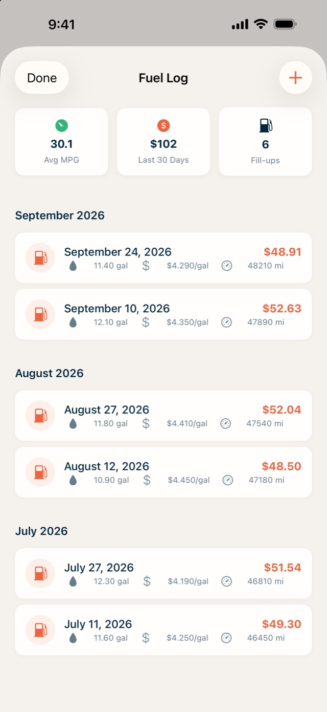
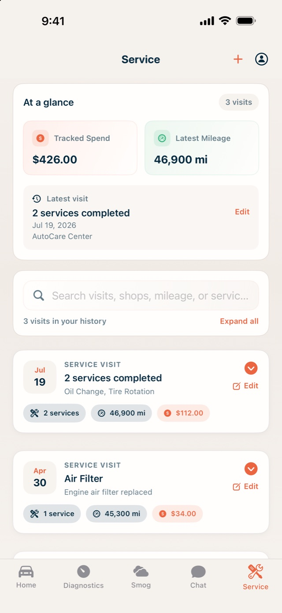

Your car, decoded.
Check engine light on? Ask in plain English. Live readings from a Bluetooth OBD-II adapter, a smog check before you pay for one, and a service and fuel log that never forgets. All of it kept on your iPhone.



Plain answers to scary lights
Type the code or just describe what you see. The assistant knows your car and says whether it's safe to drive and what to fix first.
See what your car sees
Plug in a Bluetooth OBD-II adapter for live gauges, trouble codes explained, trends over every drive, and a smog check before you pay for the real one.
A logbook that never forgets
Service visits, fill-ups, real MPG and what the car really costs. Scan a receipt and it's filed for you.
How it works
The first ten minutes with CarOtter.
Check engine light? Get plain-English answers
Tell CarOtter what the dash is showing. It answers with your car's make, year and latest readings in mind, and says how urgent it is.
- Type or talk
- Runs on your iPhone with Apple Intelligence, or bring your own key for a cloud model
Plug into the OBD port. Your car, decoded.
Any ELM327-style Bluetooth adapter will do. Live gauges you can arrange, trouble codes explained in plain words, and trends over every drive.
- 45+ readings, from RPM to coolant temperature
- Readings are saved, so the last drive is there without the adapter

Know you'll pass smog before you pay for the test
Every readiness monitor, checked. See what's still pending, what a full drive cycle will clear, and whether the car is ready today.
Your whole car, at a glance
Health, fuel and maintenance on one screen, with whatever needs attention first. More than one car? Each gets its own garage.

Every fill-up tracked. Real MPG, real costs.
Log a fill-up in seconds, or scan the receipt and let the numbers fill themselves in. See what the car actually costs to run, month by month.

Service history that never forgets
Visits, cost and mileage in one place, with a nudge when the next one is due. Scan a service document and the details are pulled out for you.
Private by design.
Your car's data stays yours.
No CarOtter server, no analytics, no ads. Your garage, readings, chats, receipts and service history live on your phone, protected by iOS file protection, and you can export or erase them any time.
The assistant runs on your iPhone by default. If you add your own OpenAI, Gemini, Claude or Grok key, what you send goes straight from your phone to that provider and nowhere else.
Questions
Do I need an OBD-II adapter?
Only for the live parts: gauges, trouble codes, trends and the smog check. Chat, the garage, service history and fuel logging work without one. Any ELM327-style Bluetooth Low Energy adapter that plugs into the OBD-II port works.
Which cars does it work with?
Any car with an OBD-II port, which is nearly every petrol car sold since 1996 and most diesels since the mid-2000s. Add a car by scanning its VIN or picking the make, year and model.
Is it really free?
Yes. No subscription, no in-app purchases, no ads; it's made by one independent developer. If you use a cloud AI model with your own key, that provider bills you directly. Apple Intelligence on the phone costs nothing.
Can I trust the advice?
Treat it as a knowledgeable friend, not a mechanic. It explains codes and readings and tells you how urgent things look, and it always says when something needs a professional. Safety-critical decisions belong with a qualified technician.
Which devices?
iPhone and iPad on iOS 16 or later. The built-in on-device assistant needs iOS 26 and an Apple Intelligence device; older phones can use a cloud model with your own key.